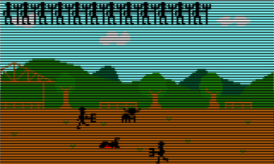

All of his life Lorenzo was trained to become a fierce fighting bull, but the day he manages to defeat his oponent against all odds, the world turns into himself and his family... will Lorenzo be able to escape and save his mother from slaughter?
Features
Three stages full of action.
La Maestranza
Streets of San Martin
Vistahermosa Cattle Ranch

HiFi Music and Sounds by Ashton Morris
Powered by Phaser technology
Play anywhere using your computer
Cart art: Mosaik, by Bernard Sandoz (1909)
Developed by Santiago Zapata
#StopBullfighting
On July 9 2016 Lorenzo jumped into the Bullring of Teruel, Spain. He was the third bull of the day: Listillo and Clavero had already died at the hands of matadores Curro Diaz and Morenito de Aranda. Victor Barrios, a bullfighter from Segovia, died that day after Lorenzo rammed a horn through his chest.
Lorenzo was sacrificed shortly afterwards, and his mother Lorenza may have been slaughtered too as part of a tradition to end the lineage of the "Killer Bull", but she had reportedly been killed already weeks before, because of her old age.